Lumens Deep Documentation & User Manual
Welcome to the official manual for Lumens Deep. Learn how to unleash the full power of 32-bit linear RAW computational photography, progressive 3D depth raymarching, and custom GPU plugin development.
1. Installation & System Requirements
Lumens Deep is built with Python 3.10+, ModernGL, and PySide6. It is fully cross-platform (Windows 10/11, macOS, Linux).
System Requirements:
- Operating System: Windows 10/11 (64-bit), macOS 12+, or modern Linux distribution.
- Graphics Hardware (AI & Rendering):
- NVIDIA GPU Acceleration (Recommended): NVIDIA GeForce RTX / GTX Series (CUDA 12.1+ / 12.6+ / 12.8 driver) for ~12x faster neural processing.
- AMD / Intel GPU Acceleration: DirectX 12 / DirectML compatible dedicated or integrated graphics.
- Apple Silicon: M1/M2/M3/M4 via CoreML / Metal.
- Rendering: Dedicated or integrated GPU supporting OpenGL 3.3+ (ModernGL).
- Python Version: Python 3.10, 3.11, 3.12, or 3.14+.
Step-by-Step Installation:
git clone https://github.com/3dcarrots/LumensDeep.git
cd LumensDeep
pip install -r requirements.txtChoose the command corresponding to your hardware setup:
For NVIDIA GPUs (CUDA 12.6 Acceleration — ~12x Speedup):
pip install torch torchvision --index-url https://download.pytorch.org/whl/cu126 --upgradeFor AMD / Intel / Windows GPUs (DirectX 12 DirectML Acceleration):
pip install onnxruntime-directmlFor CPU-Only Mode: No additional packages needed; Lumens Deep automatically falls back to optimized multi-threaded CPU processing.
python src/gui/main_window.py2. Workspace & Dock Navigation
The interface is structured into modular dockable widgets configured for ergonomic photo editing workflows:
- Left Dock Tabs:
- Folders Dock: Hierarchical directory explorer with automatic subfolder discovery.
- Global Settings Dock: Lens calibration, 3D Bokeh raymarching controls, and output base curves.
- AI Assistant Dock: Background queue for computing 3D Depth Maps, Surface Normals, and Subject Matting.
- Central Viewport: High-performance canvas with GPU zoom, pan, interactive Crop & Straighten HUD, and Before/After Split comparison wipe.
- Right Dock Panels:
- Layers Dock: Non-destructive layer stack with blend modes, opacity sliders, and mask preview icons.
- Layer Effects Dock: Host for active layer adjustment plugins (Basic Adjustments, Tone Equalizer, Color Equalizer).
- Masks Dock: Precision parametric OKLCH color, luminance range, linear/radial gradients, and 3D depth/normal masking.
- Bottom Filmstrip Dock: Multi-threaded async thumbnail browser with disk caching and fast image switching.
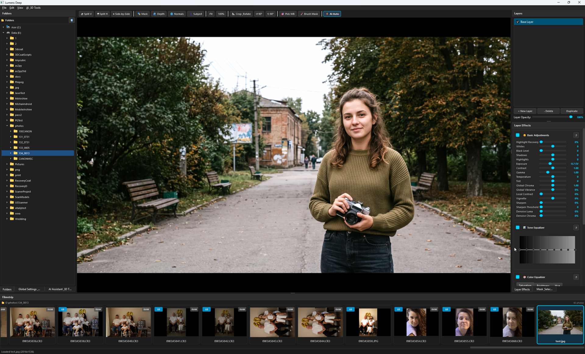
3. Supported File Formats, Mipmapping & Color Pipeline
Lumens Deep processes sensor data through a pure 32-bit linear floating-point pipeline:
- RAW Sensor Formats: Canon (
.CR3,.CR2), Nikon (.NEF), Sony (.ARW), Fujifilm (.RAF), Panasonic/Leica (.RW2), Adobe Digital Negative (.DNG). - Hardware Trilinear Mipmap Anti-Aliasing: 45MP+ RAW textures automatically generate GPU mipmap pyramids (
GL_LINEAR_MIPMAP_LINEAR), eliminating sensel aliasing, moiré patterns, and downsampling noise in viewport preview. - Standard Image Formats:
.TIFF(8/16/32-bit float),.PNG,.JPG,.JPEG,.WEBP,.EXR. - Perceptual Color Science: Tone and color equalizers operate in perceptual OKLab / OKLCH color space, preventing hue shifts when adjusting high-key luminance.
5. Interactive Crop, Aspect Ratios & Straighten HUD
Press C or click the 📐 Crop & Straighten button on the toolbar to activate the interactive crop HUD:
- Aspect Ratio Presets: Choose standard framing ratios (
Free,Original,1:1,4:5,16:9,3:2) directly from the top toolbar, Global dock, or before running batch processing. - Golden Rule-of-Thirds Grid: Dynamic grid overlay updates in real-time as you resize.
- 8 Corner L-Brackets & Midpoint Tabs: Drag to adjust horizontal and vertical crop bounds.
- Interactive Rotation: Hover just outside any corner bracket (the cursor transforms into a curved rotation arrow) and drag to straighten tilted horizons (
-45.0°to+45.0°). - Commit or Cancel: Press
Enterto apply crop orEscto cancel without applying.
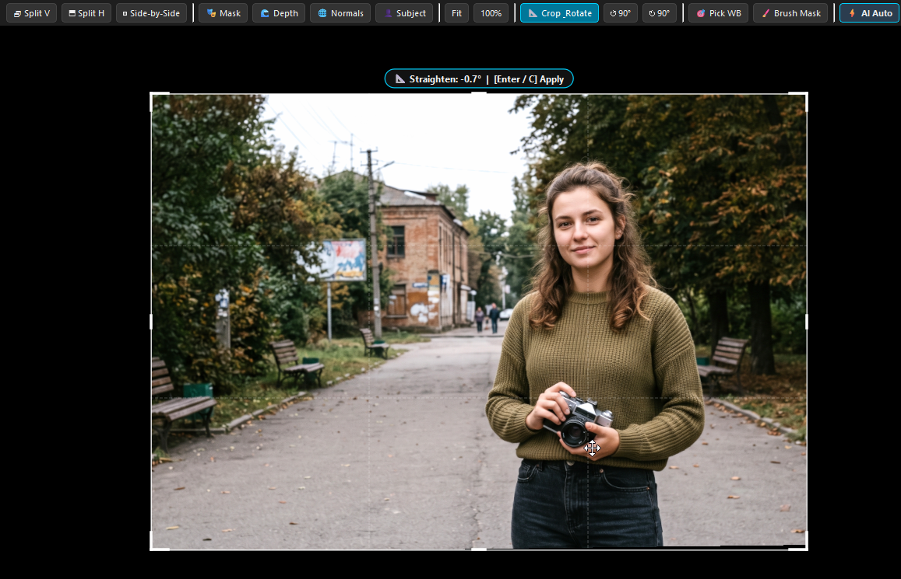
6. Split Wipe & Before/After Comparison
Inspect adjustments against the original untouched sensor data:
- Before Mode (
\): Instantly preview the original unprocessed RAW capture. - Vertical Split Wipe (
V): Divides the canvas into Before (left) and After (right). Drag the vertical divider line horizontally. - Horizontal Split Wipe (
H): Divides canvas vertically (top Before, bottom After). - Side-by-Side View (
B): Dual-pane simultaneous comparison.
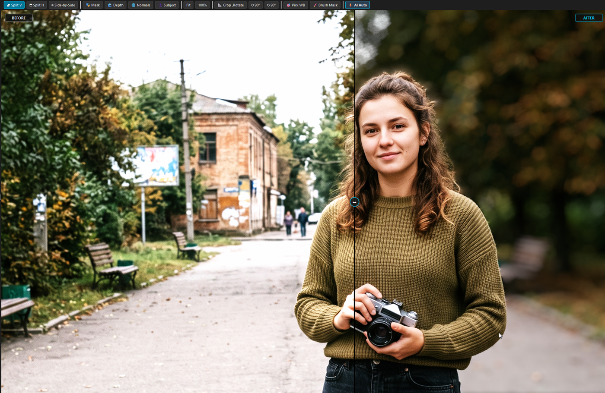
7. Non-Destructive Layer Architecture
Every photo opens with a Base Layer. Add targeted local adjustments by stacking layers:
- Click
+ New Layerin the Layers dock. - Adjust layer opacity ($0\%$ to $100\%$) to control overall adjustment strength.
- Each layer maintains its own independent set of plugin settings, masks, and blend parameters.
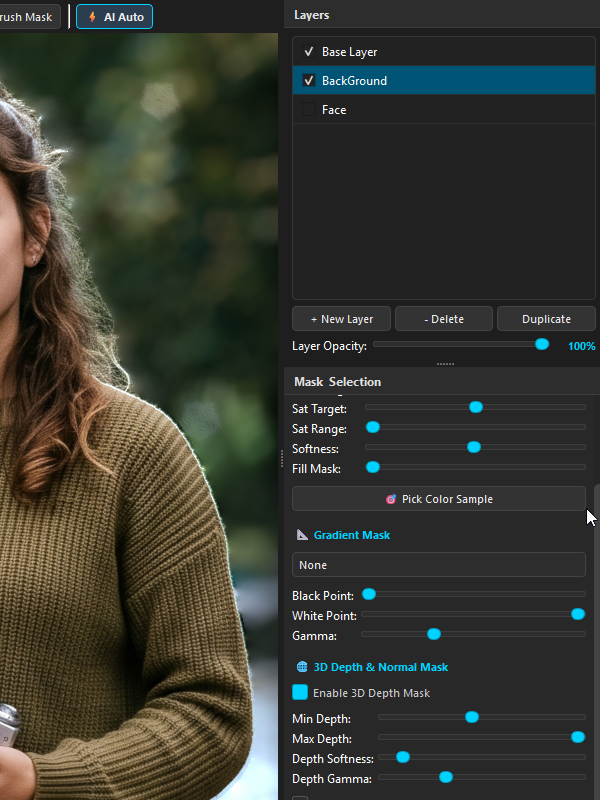
8. Built-in Basic Adjustments Plugin
The Basic Adjustments plugin provides fundamental photographic controls running in pure GLSL:
- Exposure ($-3.0$ to $+3.0$ EV): True linear sensor gain compensation.
- White Balance: Temperature (Kelvin shift) and Tint (Green-Magenta balance).
- Highlights & Shadows Recovery: Bilateral tone compression to restore sky details and open shadow depth.
- Whites & Black Level: Set black clipping point and specular headroom.
- Denoise (Luma & Chroma): YCbCr bilateral filter noise reduction preserving edge sharpness.
- Sharpening: High-pass frequency boost with threshold gating.
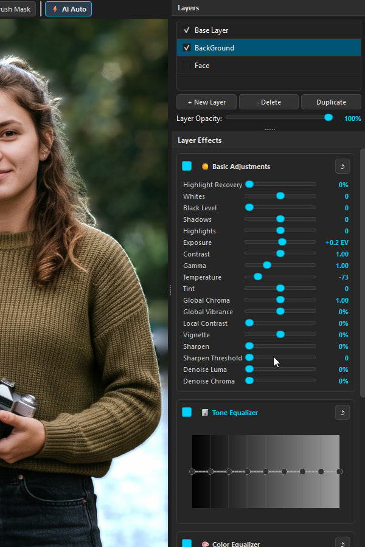
9. 8-Band OKLCH Tone Equalizer
Unlike conventional curve editors that distort saturation, the Tone Equalizer operates in perceptual OKLCH color space across 8 luminance bands:
- Bands span from $-8\text{ EV}$ (deep shadows) through $-4\text{ EV}$ (midtones) to $+1\text{ EV}$ (specular highlights).
- Drag control points on the interactive spline widget to boost or tame specific exposure zones smoothly.
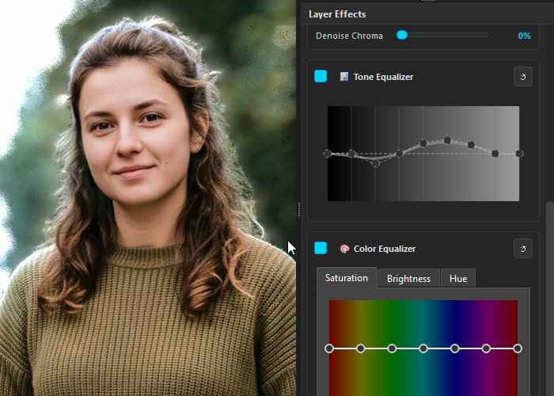
10. Color & Shadow Color Equalizers
Selective color grading across 8 primary hue zones (Reds, Oranges, Yellows, Greens, Cyans, Blues, Purples, Magentas):
- Color Equalizer: Adjust Hue Shift, Saturation Scale, and Lightness Offset for each color band.
- Shadow Color Equalizer: Applies hue and saturation adjustments selectively inside shadows for cinematic split-toning.
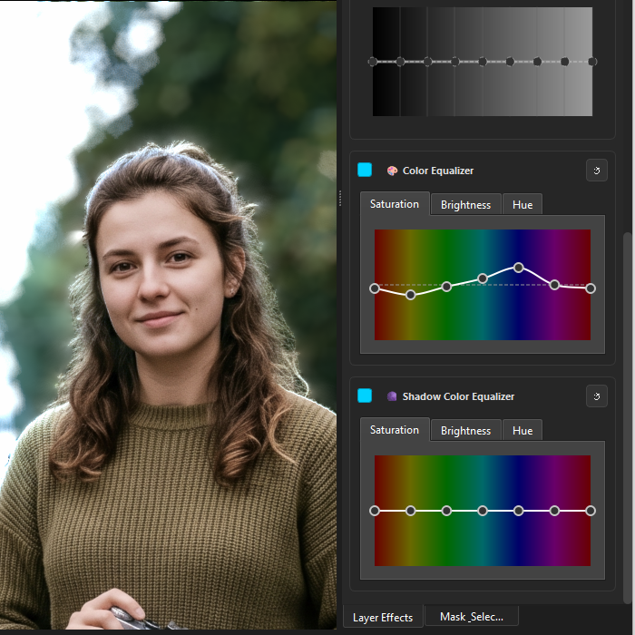
11. GPU Brush Painting & Precision Masking
Paint precision adjustment masks directly on the canvas:
- Press
Bto activate the brush tool. - Adjust Radius, Edge Hardness, and Opacity in the toolbar.
- Sub-Pixel Stroke Interpolation: When sweeping the mouse quickly, Lumens Deep interpolates intermediate stamps at $15\%$ spacing along the vector path, guaranteeing smooth, solid lines with zero gaps.
- Erase Mode: Hold Right Click to erase painted areas.
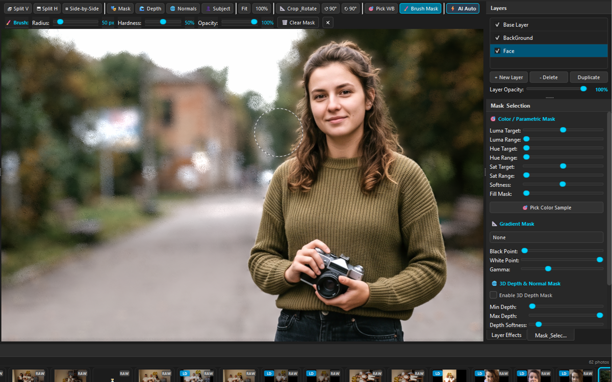
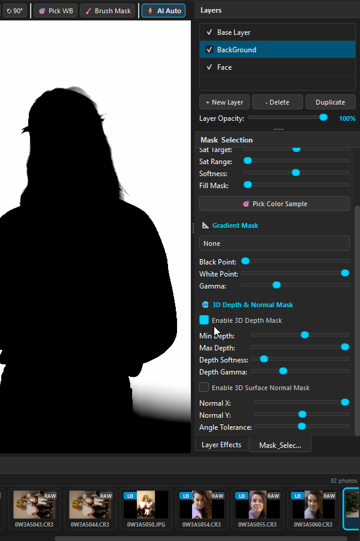
12. 3D Depth & Cinematic Bokeh Raymarching
Transform flat scenes into shallow depth-of-field masterpieces using optical Monte Carlo raymarching:
- 🎯 3D Canvas Focus Eyedropper: Click the target picker icon and click anywhere on the subject's face/eyes on canvas to automatically sample metric depth and lock the focal plane.
- Focal Distance: Slide right to focus deep into the background; slide left to focus on near foreground objects.
- Focal Range: Controls Depth of Field (DoF) slab thickness ($20-35\%$ recommended for tack-sharp portrait subjects).
- Subject Influence: Set to $0\%$ initially for organic optical blur roll-off without harsh cutout borders.
- Aperture Blades: Configurable from 3 blades (Triangle), 4 blades (Square) up to 10 blades (Circular smooth lens).
- Optical Cat-Eye Vignetting: Accurately truncates blur discs towards the frame perimeter.
- Chromatic Aberration: Adds subtle radial color dispersion to specular highlights.
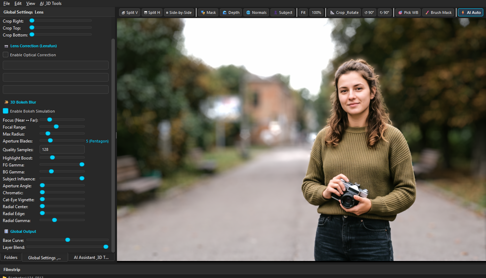
13. Offline 3D Neural Maps & GPU Hardware Acceleration
Lumens Deep automatically checks for pre-computed maps in the LumenDeep/ subfolder beside your photos:
{stem}_depth.png$\rightarrow$ 3D Metric Depth Map{stem}_normals.png$\rightarrow$ High-Frequency Surface Normals{stem}_subject.png$\rightarrow$ Alpha Matting Subject Mask
Generate maps on demand via the AI & 3D Tools menu: Ctrl+Shift+D (Depth), Ctrl+Shift+N (Normals), Ctrl+Shift+S (Subject), or Ctrl+Shift+A (Compute All).
⚡ Multi-Backend Hardware Acceleration & Safe Mode:
Lumens Deep features an adaptive, heterogeneous engine that dynamically selects the fastest hardware backend available:
- NVIDIA CUDA FP16 (Recommended): Utilizes Tensor Cores and batched patch dispatch ($B=4..8$), yielding ~12x faster inference (0.024s / tile on RTX 4070).
- DirectML (DirectX 12): Provides GPU acceleration on Windows for AMD Radeon, Intel Arc, and Intel UHD/Iris Graphics.
- CoreML (Metal): Hardware acceleration for Apple Silicon Neural Engine.
- Multi-Threaded CPU: Resilient fallback on non-GPU systems.
In the AI Assistant Dock, the ⚡ AI Hardware & GPU Acceleration card gives you full control:
- Live Hardware Status: Displays your active GPU device and available VRAM.
- Engine Mode Selector: Switch between
Auto,NVIDIA CUDA,DirectML, orCPU Safe Mode. - [ ] 🛡️ Disable GPU (Safe Mode / CPU Only): Checkbox to completely bypass GPU memory allocation. If you experience GPU driver timeouts, low VRAM issues, or background rendering conflicts, enabling Safe Mode forces instant CPU execution without restarting the app.
- Auto-Recovery: If a GPU out-of-memory error occurs during high-res tiling, Lumens Deep automatically catches the error, purges VRAM, and completes the frame on CPU without crashing.
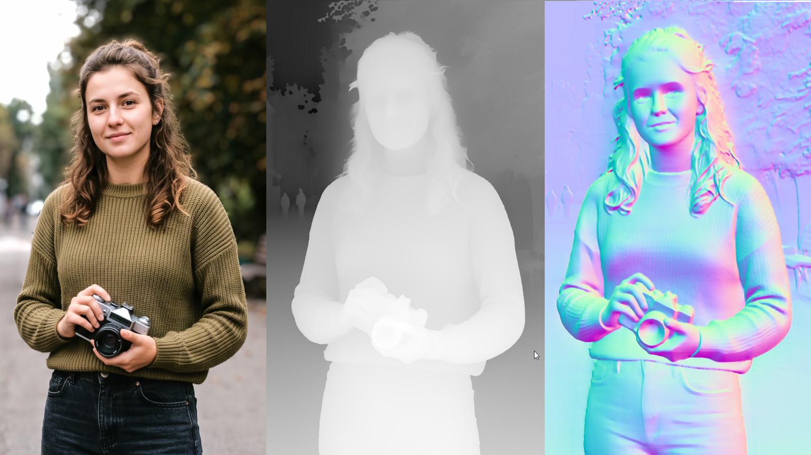
14. Google Gemini 3.7 Flash AI Assistant
Lumens Deep integrates Google Gemini 3.7 Flash with extended Thinking Reasoning as an intelligent co-pilot for automated photo development:
- 📋 Studio Retouching Rules (Top): Persistent fine-art guidelines used by auto-correction and batch AI processing (e.g. prioritizing 3D facial volume, rich base curves, warm healthy skin tones, and background separation).
- 💬 One-Time AI Action Prompts (Bottom): Send single-use instructions (e.g. "Focus on the child's face", "Make skin tones warmer", "Add 3D volume") via
Enterhotkey. Input field auto-clears on send and never contaminates general rules. Quick suggestion chips provide one-click presets. - ⚡ Multi-Pass Auto-Correction: Evaluates dynamic range, highlight rolloff, shadows, white balance, contrast, and composition with $50\%$ dampened multi-pass convergence.
- 📐 Automated Straightening & Rule-of-Thirds Crop: Gemini actively levels tilted horizons (
straighten) and applies compositional crops (crop) to remove clutter. - 🛡️ AI Bokeh A/B Verification: Automatically renders and evaluates with-bokeh vs without-bokeh frames at the end of auto-tuning to protect the subject from accidental blur.
- Deep Thinking Budget: Configurable reasoning tokens ($1024$ to $4096$) allow Gemini to deeply reason before suggesting parameter adjustments.
15. 2-Phase AI Batch Culling & Resilient Batch Automation
Effortlessly triage, rate, and automate large photo shoots with zero dropped photos (Ctrl + Shift + C / Ctrl + Shift + A):
- Phase 1 (Quick Global Triage): Analyzes 10 photos per batch, assigning 1–5 Star Ratings, flagging rejects (
❌), and proactively marking keeper portraits for 3D depth (🧊 +3D). - Phase 2 (Deep Optical Verification & Center 50% Crop): Automatically extracts a high-resolution Center 50% Crop to inspect subject sharpness. Accurately distinguishes genuine motion blur/camera shake from intentional shallow depth-of-field or soft background bokeh.
- ⚡ Batch AI Auto-Correction (
Ctrl+Shift+A): Automatically grades all keeper photos sequentially, estimating 3D depth maps, adjusting layers, and creating artistic multi-crop presets. - 🚀 1-Click Full Auto Workflow (
Ctrl+Shift+F): Combines 2-phase culling, blur rejection, 3D depth estimation, and batch AI color grading into a single automated pipeline. - ⏩ Smart Resume & Skip (
chk_batch_skip_already_processed): Instantly skips already processed & exported photos in ~40ms; fast-exports missing JPEGs in ~150ms from saved.lumendeepsidecars without wasting API tokens. - 🔄 Infinite 10-Second Retry Loop: Never drops or skips photos during API rate limits (
429 Resource Exhausted) or network interruptions; pauses 10s and automatically retries until successful. - 📷 Optical Distortion Undistortion on 3D Neural Maps: Mode 2 geometric undistortion is applied to Depth Maps, Normal Maps, and Subject Masks, ensuring 100% pixel-perfect alignment and zero ghosting in 3D Bokeh.
16. AI Neural Noise Reduction (NAFNet In-Memory)
Lumens Deep features an integrated deep learning image restoration engine powered by NAFNet (Nonlinear Activation Free Network), pre-trained on real-world raw sensor noise benchmarks (SIDD, 40.30 dB PSNR). Unlike standard post-demosaic sRGB noise filters that blur fine details, Lumens Deep performs noise reduction in-memory directly on 32-bit linear floating-point sensor data prior to tone mapping and color grading.
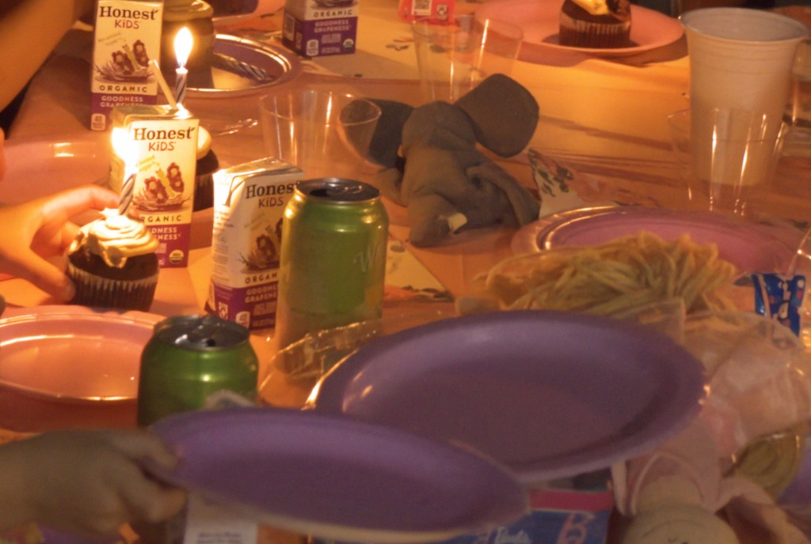
Interactive Controls in the AI Assistant Dock:
- 🔇 AI Denoise Current Photo (In-Memory): Instantly runs neural denoising on the currently open photo. The denoised linear floating-point data updates the GPU texture in real time without creating bulky intermediate files on disk.
- Strength Slider (0% to 100%, default 100%): Seamlessly controls the neural attenuation amount, allowing subtle blending between raw capture and complete noise erasure.
- Texture / Detail Retention Slider (0% to 100%, default 25%): Employs spatial frequency coring to preserve and re-inject natural, organic micro-textures and film grain, preventing the artificial "plastic skin" effect.
- Tile Size (512 / 1024): Partitions large 24MP–45MP images into overlapping patches blended with 2D Hann/cosine windows for zero edge seams.
- Model Architecture: Choose between
NAFNet-SIDD-width64.pth(maximum reconstruction fidelity) andNAFNet-SIDD-width32.pth(high-speed lightweight inference). - Save Denoised 16-bit Linear TIFF: Optional checkbox to write clean, uncompressed 16-bit linear TIFFs into
LumenDeep/for downstream compositing.
⚡ Automated ISO Threshold Gating & Batch Resume:
In high-volume workflows, running neural denoising on clean studio captures (ISO 100 on tripod) wastes time and computation. Lumens Deep solves this with intelligent ISO gating:
- Auto-Denoise before export when ISO > [200]: Automatically inspects raw hardware metadata (
raw.other.iso_speed, EXIF 2.3+PhotographicSensitivity). If the photo's ISO exceeds the threshold (default: 200), NAFNet executes in-memory immediately prior to rendering and exporting. - Smart Resume & Fast Export Integration: When re-exporting tuned photos with "Skip already processed (Resume & Export missing)", Lumens Deep verifies whether the photo was already denoised. If missing, it applies NAFNet in-memory and re-exports clean JPEGs without re-running Gemini AI prompts.
- Live Split Comparisons: Retains the pre-denoised capture as the reference source in memory. Pressing
V(Split V),H(Split H), orB(Side-by-Side) allows instant real-time before/after comparison on the live canvas.
17. Resizable Filmstrip, Rating & 3D Depth Badges
The bottom Filmstrip provides a smooth, asynchronous photo browser with smart status indicators:
- Height Resize Handle: Drag the top divider to adjust thumbnail size dynamically from $100\text{px}$ up to $360\text{px}$.
- ✓ 3D (Depth Ready Badge): Solid cyan/teal pill indicating a 16-bit depth map exists on disk in
{folder}/LumenDeep/. - 🧊 +3D (Depth Needed Badge): Amber outline indicating the photo is flagged as requiring 3D depth generation.
- Keyboard Rating: Press
1–5for Star ratings,Xfor Reject, and0to clear. - LumenDeep Subdirectory: Keeps your workspace pristine by storing all sidecars (
.lumendeep), depth maps (_depth.png), normals (_normals.png), and subject masks (_subject.png) in the localLumenDeep/subfolder.
18. FastMCP Server Integration for AI Agents
Lumens Deep features a native Model Context Protocol (MCP) server (src/mcp_server.py) for seamless integration with AI coding assistants and automation workflows:
- Transport: Supports both stdio and Server-Sent Events (SSE) on
http://localhost:8000/sse. - Tools:
get_editor_state,apply_adjustments,get_viewport_image,get_image_crop, andget_histogram_stats.
19. How to Write a Custom Effect Plugin
The plugin architecture allows you to create new GPU-accelerated filters with a single Python file:
from src.plugins.base import BaseEffectPlugin
from PySide6.QtWidgets import QWidget, QVBoxLayout, QSlider, QLabel
from PySide6.QtCore import Qt
class FilmGrainPlugin(BaseEffectPlugin):
@property
def plugin_id(self) -> str:
return "film_grain"
@property
def display_name(self) -> str:
return "Film Grain"
@property
def category(self) -> str:
return "Effects"
def get_default_settings(self):
return {'grain_amount': 0}
def get_glsl_uniforms(self) -> str:
return "uniform float u_grain_amount;\n"
def get_glsl_functions(self) -> str:
return """
float hash_noise(vec2 co) {
return fract(sin(dot(co, vec2(12.9898, 78.233))) * 43758.5453);
}
"""
def get_glsl_execution(self) -> str:
return """
if (u_grain_amount > 0.0) {
float noise = (hash_noise(uv * 1000.0) - 0.5) * u_grain_amount * 0.15;
linear_rgb += vec3(noise);
}
"""
def apply_uniforms(self, program, settings, engine):
if 'u_grain_amount' in program:
val = settings.get('grain_amount', 0) / 100.0
program['u_grain_amount'].value = float(val)
def create_widget(self, parent, on_changed):
w = QWidget(parent)
layout = QVBoxLayout(w)
slider = QSlider(Qt.Horizontal)
slider.setRange(0, 100)
slider.valueChanged.connect(on_changed)
w.slider = slider
layout.addWidget(QLabel("Grain Amount:"))
layout.addWidget(slider)
return w
def get_state(self, widget):
return {'grain_amount': widget.slider.value()}
def set_state(self, widget, state):
widget.slider.setValue(state.get('grain_amount', 0))
def reset_state(self, widget):
self.set_state(widget, self.get_default_settings())Save your file into src/plugins/builtin/. On launch, Lumens Deep discovers the plugin, registers it in the Layer Effects dock, and compiles its GLSL code into the rendering pipeline.
20. Non-Destructive Sidecars & Aspect Subfolder Auto-Sorting
- Sidecar JSON (
Ctrl + S): Saves all layer parameters, curve points, crop angles, notes, and mask metadata in a lightweight.lumendeepsidecar insideLumenDeep/. - Dirty State Tracking & Save Prompts: Never silently overwrites project files during browsing; prompts with Save/Discard/Cancel when switching photos after manual edits.
- High-Resolution Export (
Ctrl + E): Renders the full-resolution sensor capture with 16-bit float fidelity to TIFF, PNG, or JPEG.
📁 Aspect Ratio Subfolder Sorting & 5-Star Rule
When batch exporting (via AI Auto-Export or Filmstrip context menu "Batch Export to JPEG 85%"), files and AI multi-crops are automatically categorized into structured subfolders:
- 🖼️
./LDExport/Original/— Full-frame uncropped master images. - 📱
./LDExport/Photo_iPad_4x5/— 4:5 vertical & 5:4 horizontal compositions. - 🎞️
./LDExport/Portrait_2x3/— 2:3 vertical & 3:2 horizontal classic 35mm formats. - ⏹️
./LDExport/Square_1x1/— 1:1 square feeds & avatars. - 📐
./LDExport/Story_3x4/— 3:4 vertical & 4:3 stories. - 🎬
./LDExport/Cinematic_16x9/— 16:9 widescreen & 9:16 vertical video crops.
Photos rated 5★ automatically save an extra master copy directly in the root ./LDExport/ folder for instant client delivery. Photos rated 4★ and below remain cleanly organized in their respective aspect subfolders.
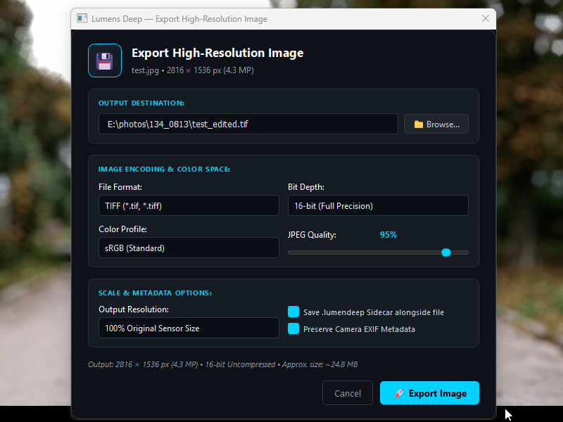